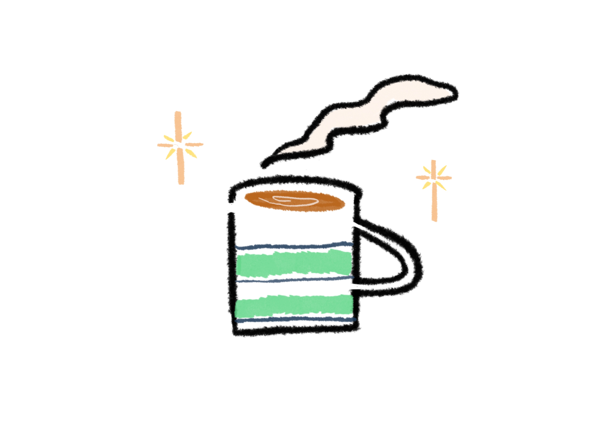
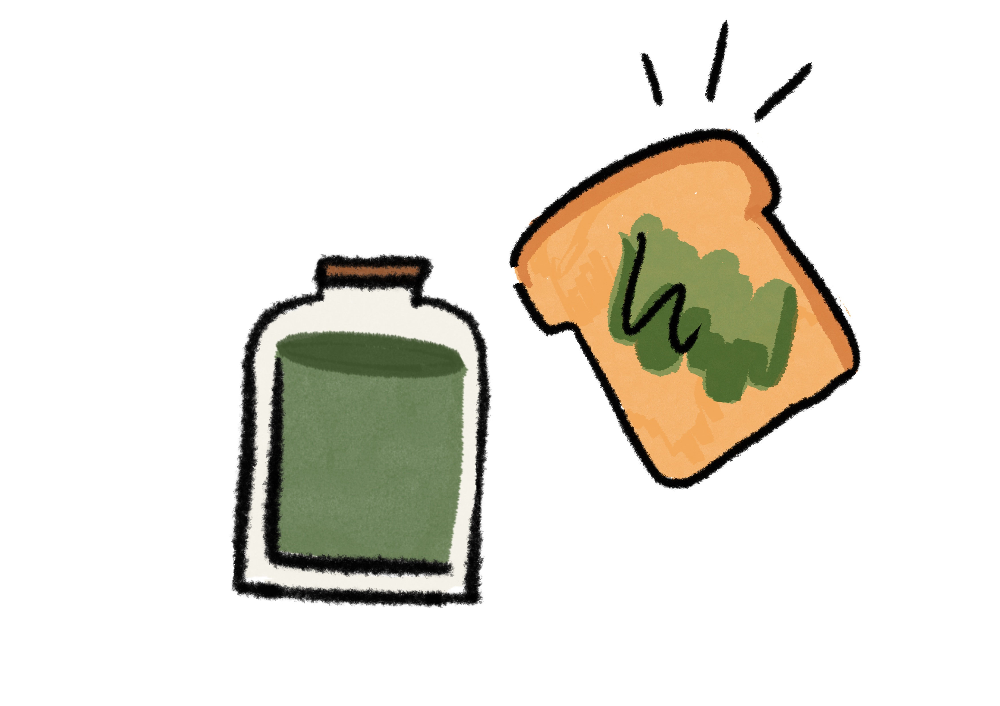

All you need for this simple cup of JOY
are Tealeaf of your choice, cane or brown sugar,
and your favorite mug.
All you need for this simple cup of JOY
are Tealeaf of your choice, cane or brown sugar,
and your favorite mug.
1. Hit the pan and lightly roast your tea leaf.
2. Add 1 teaspoon of sugar, stir until the sugar
melt and turn slight brown-ish.
3. Add COLD milk, bring to boil then turn off heat.
4. Pour to your fav mug and enjoy.
1. Add 2 teaspoon of matcha powder and 2 teaspoon
of boil water to make a thick paste.
2. Pour 1 cup of coconut milk and 1 cup of
almond milk to the pot, bring to boil.
3. Add in the matcha paste and stir occasionally,
till become a jam like consistency.
4. Let cool in the bottle, spread to your toast!
1. In a large bowl, put in the rice, corn, nori, mixed veggie,
bacon or ham, mayo, ketchup and toasted sesame seed.
2. Mix all the ingredients together, mould
the rice into small balls.
3.Baked in the oven for 10 minutes ( 320F or 160C),
top it with cheese. Enjoy.